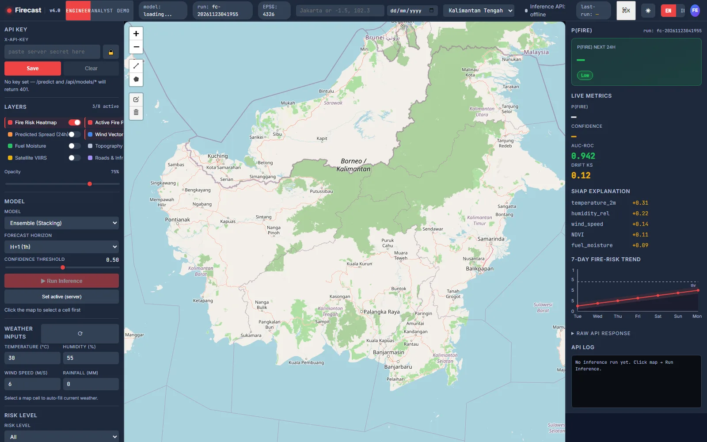

01Fire risk intelligence
FireCast
Platform prediksi risiko kebakaran berbasis stacking ensemble dengan peta interaktif dan API inferensi titik/AOI.
- Stacking LightGBM + XGBoost
- Kalibrasi isotonik
- SHAP top features
Demo HF — jika Space sedang tidur, klik Restart.
Ringkasan teknis
Masalah
Skor risiko kebakaran sering tidak terkalibrasi dan sulit dijelaskan, sehingga tidak cukup dipercaya untuk keputusan operasional.
Pendekatan
Stacking ensemble LightGBM + XGBoost dengan meta-model LogisticRegressionCV, kalibrasi isotonik, dan SHAP untuk menjelaskan faktor dominan. Disajikan lewat API FastAPI untuk titik maupun AOI, plus peta React/Leaflet.
Hasil
API inferensi titik dan batch, risk bands, editor AOI, rate limit, serta autentikasi API key. Model dan antarmuka berjalan dalam container dengan CI.